Đối với anh em Reverse thì CFF không còn quá xa lạ rồi. CFF gặp không chỉ trong CTF, mà malware dùng cũng rất nhiều.
Đây là 1 kiểu flow obfuscate theo mình đánh giá thì rất khó chịu, không những khó chịu khi mình debug mà còn làm khó cả những tool deobfuscate CFF. Những hrtng, d810 deobfuscate CFF bằng ida microcode có thể rất ok ở những mẫu obfus CFF đơn giản, tuy nhiên với các dạng CFF có nhiều variant hơn thì rất dễ ngọng – bởi các block microcode hoạt động theo dạng double linked list:

Trong quá trình deobfuscate CFF, các block này sẽ được xử lý bằng cách sửa các link về đúng block của flow, tuy nhiên có thể các tool deob không build đúng link cho các block, giả sử như block1 và block2 không double linked với nhau, khi này sẽ dẫn đến internal error của IDA.
Ngoài ra, chính việc không hiểu được các pattern của các biến thể, khiến cho các tool này không thể deob chính xác được. Từ đó mình nghĩ rằng nên tự custom deob lại, cũng là để hiểu sâu hơn về CFF. Mình cũng từng deob thử bằng microcode, tuy nhiên các block sẽ được xử lý qua nhiều maturity level để tiến gần hơn với mã giả mà chúng ta thấy:
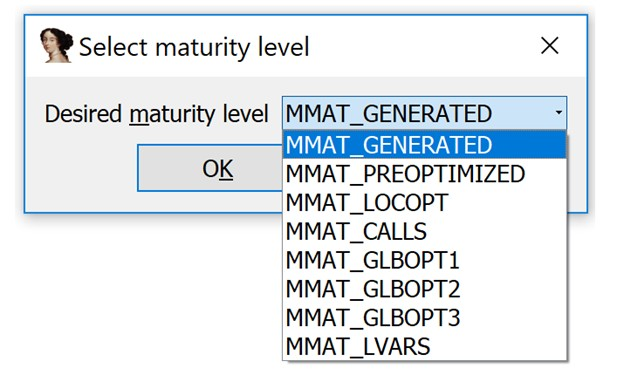Nên các block ở dạng assembly ban đầu có thể không match với các block ở các maturity level sau. Thêm nữa là vì không có graph nên khi gặp error khi double linked list sai, mình cũng rất khó để theo dõi. Thế nên khi mới tiếp cận, mình khá là mất thời gian trong việc match block để có thể deobfuscate đúng.
1 thời gian sau, khi rảnh rang lại, mình quay lại với CFF vì cảm thấy trước đây deob chưa đâu vào đâu. Và lần này, thay vì microcode chỉ để xem mã giả deob, sao ta không xiên thẳng raw assembly luôn nhỉ, mình đã nghĩ vậy và thực hiện luôn :D
Sample 1 — PlugX Variant
Mẫu đầu tiên mà mình sử dụng để deob CFF ở đây là 1 biến thể PlugX.
libcef.dll - 1c08a922c3cc4cd2733f09785d10be98Mẫu này chỉ bị CFF 3 hàm đầu tiên, cũng là main work của malware:
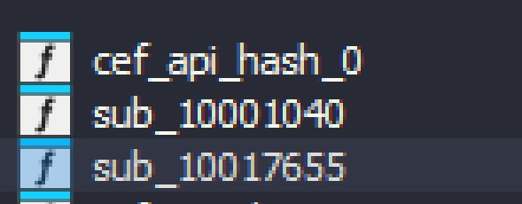Hàm export cef_api_hash với 0x10017655 thì tương đối dễ nhìn, chúng ta sẽ đi vào deob 2 hàm này trước:
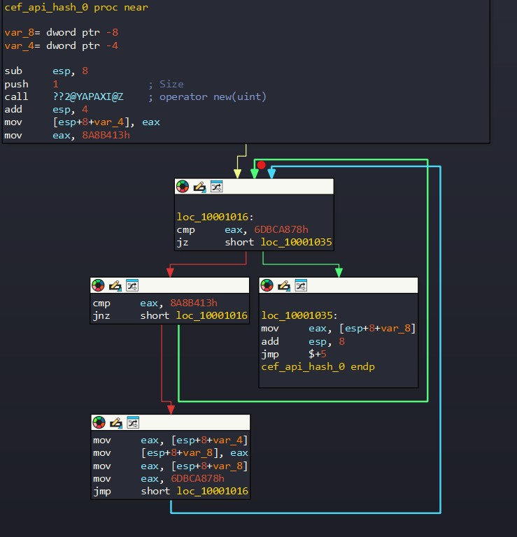 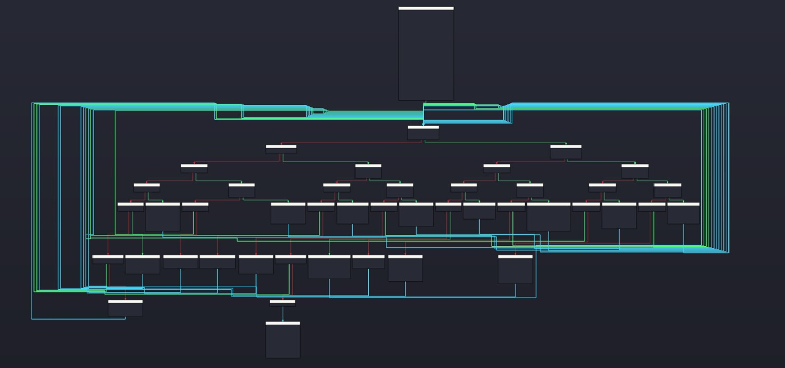1. CFF Base
Như ta đã biết, CFF flat flow ra thành các block cùng cấp. Flow CFF qua từng flattened block sẽ được switch thông qua 1 block gọi là Dispatcher.
Nhìn hình sau có thể thấy, block Dispatcher này có nhiều block trỏ về nó nhất:
Từ block Dispatcher này, ta có thông tin là EAX là dispatch register. Trong quá trình quan sát, ta cũng để ý thấy có các block mov imm32 vào dispatch register kiểu như này:
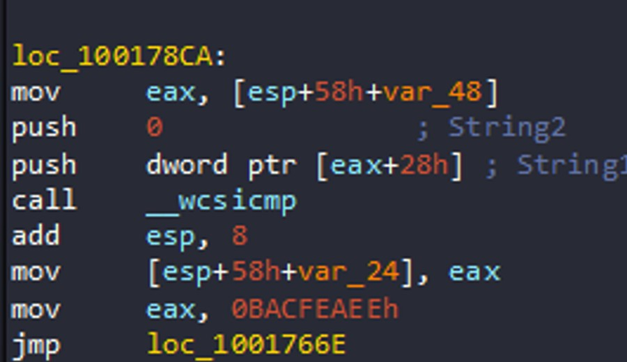Và các block compare imm32 với dispatch register:
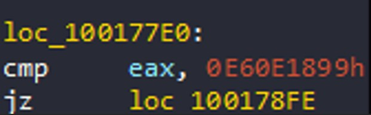Thì ý tưởng của mình là sẽ nối thẳng block nào mov eax, imm32 với cmp imm32, eax tương ứng. Ví dụ 2 block sau sẽ được nối liền vào nhau:
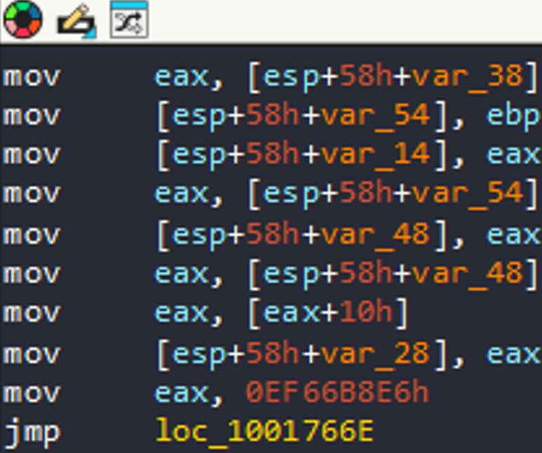 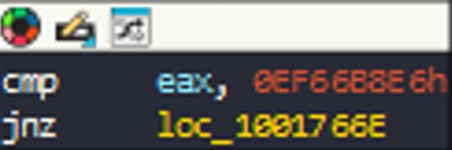Tuy nhiên vẫn chưa là đủ, bởi các block cmp vẫn chia ra 2 nhánh theo jnz và jz mà đúng không :>. Nhưng thông qua quá trình debug, mình để ý các “block thật sự” của luồng chương trình chính luôn nằm ở nhánh False của jnz và nhánh True của jz. Ở đây mình sẽ highlight lên cho mọi người dễ nhìn:
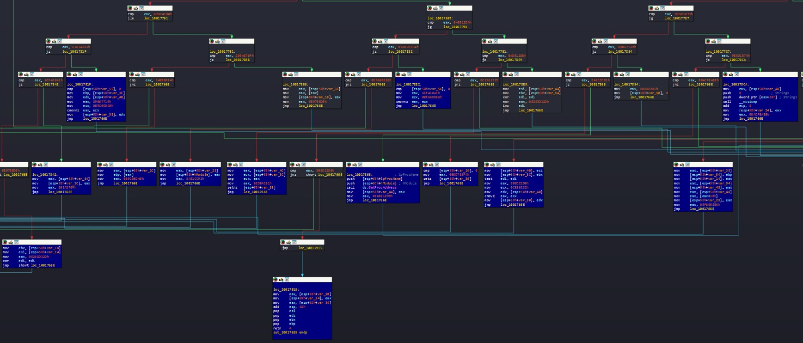 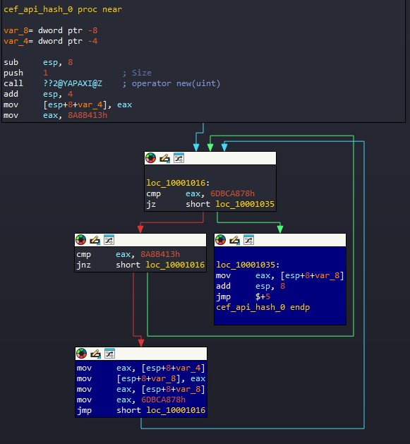Từ đây, mình có 1 chain deobfuscate như sau:
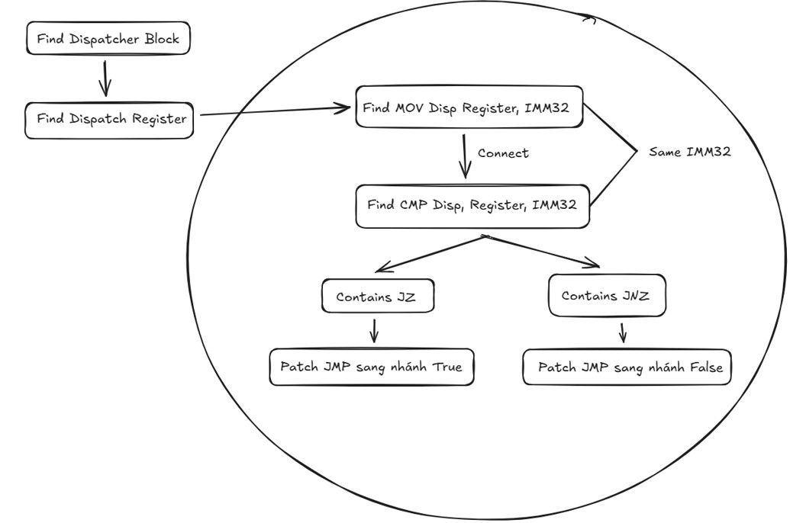Trong nhiều mẫu CFF mình gặp, đều tuân theo quy tắc này, đây có thể coi như trái tim của CFF.
2. Variant Patterns
2.1. Variant CMOVZ
Tại hàm 0x10017655, mình cũng phát hiện được thêm 1 variant sử dụng CMOVZ:
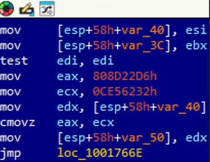CMOVZ sẽ được sử dụng như 1 switch để khiến block này đi theo 2 nhánh khác nhau. Với 2 giá trị của dispatch reg và temp reg là 0xCE56232 và 0x808D22D6 (tạm gọi là main imm32 và sub imm32), qua việc debug bằng list các block cmp match với 2 giá trị này, mình nhận thấy:
- Sub imm32 sẽ khiến chương trình luôn nhảy về block match imm32 gần nhất.
- Main imm32 cũng tương tự, luôn khiến chương trình về block match imm32 có địa chỉ gần nhất.
Từ đó mình có flow xử lý variant này như sau:
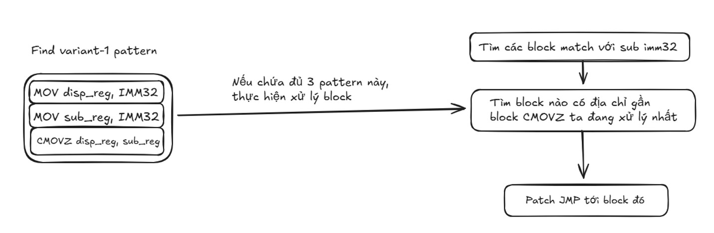Ta có output khá clean, là 1 hàm resolve API qua GetProcAddress với Module loop từ PEB:
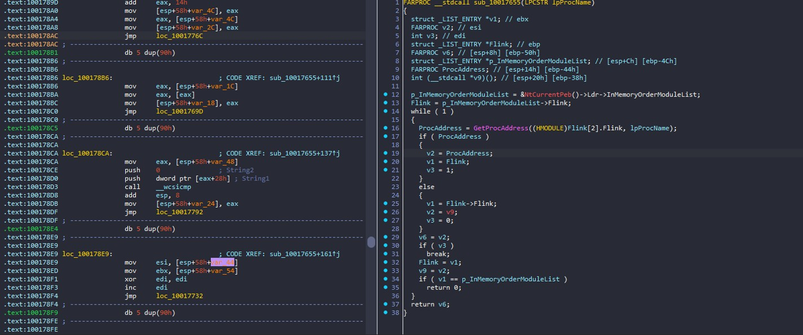2.2. Variant CMOVB
Như 2 hàm mình đã đề cập bên trên, nó khá là dễ theo dõi và graph cũng khá nhỏ để theo dõi cũng như hiểu mà deob. Nhưng ác mộng của mình quay trở lại khi tới với hàm 0x10001040, trước hết là nó quá to để có thể tìm được hết variant ☹:
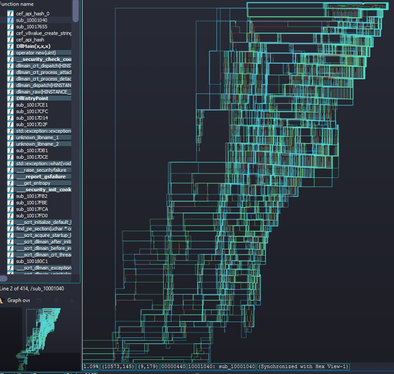Thứ 2 là không đơn thuần chỉ sử dụng 1 dispatch register nữa, hàm này sử dụng thêm các nested dispath register khác như ecx, edx, esi, edi:
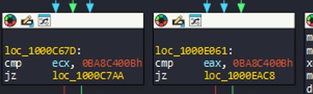Điều này gây khó cho mình khi tìm toàn bộ các dispatch reg, bởi, các hàm đơn giản chỉ có 1 block là được trỏ nhiều nhất (chắc chắn là dispatcher). Vậy nếu có nhiều block cũng được trỏ nhiều như thế thì phải làm sao?
Mình đi đến ý tưởng loại bỏ các block chỉ có predset count là 0, 1,2 (bởi vì các block này rất phổ thông phải không, chương trình nào cũng có). Và những block còn lại, nếu predset count của nó xuất hiện quá ít so với các block khác trong chương trình (cái này khá false positive, mình chưa tìm ra thuật toán nào hợp lý :v), mình sẽ nhận định đây chính là dispatcher và nested dispatcher. Và từ đó mình tìm ra dispatch reg như sau:
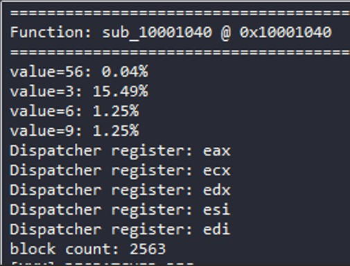Thì ý tưởng cũng khá là dễ thôi, nested dispatcher nghe thì hầm hố nhưng thực ra thực hiện loop deob với từng dispatch khác nhau là được mà 😊.
Sau khi đã xác định được dispatchers và deob theo các bước đã làm với 2 hàm kia, mình nhận ra tại đây có 1 variant nữa là CMOVB. Đây là variant tốn thời gian nhất của mình vì debug và đoán pattern hoạt động tương đối khó. Ở đây, ta theo dõi 1 block của variant này:
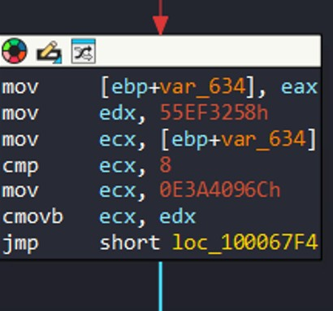Giống với CMOVZ, dễ thấy nó cũng sử dụng 2 imm32 để switch flow. Tuy nhiên, khác với CMOVZ, tìm block đích không còn dùng kiểu tìm block có địa chỉ gần nhất được nữa ☹. Mà thông qua debug, mình để ý 1 imm32 thì vẫn tuân theo quy tắc địa chỉ gần nhất, nhưng imm32 còn lại sẽ match theo pair index. Kiểu như thế này:
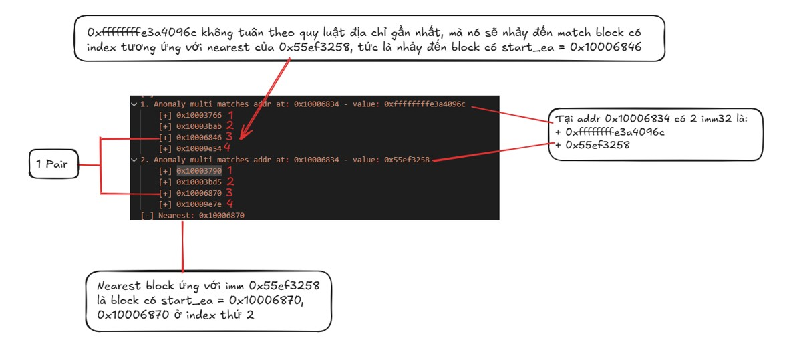Idea khá rõ ràng rồi đúng không, tương tự như CMOVZ, ta sẽ patch JB vào variant CMOVB này:
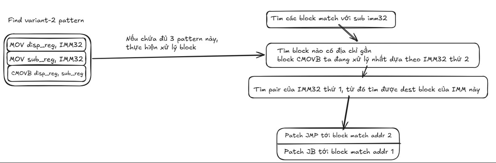Ngoài 2 variant chủ đạo này, còn 1 variant nữa, nhưng nó tương tự pattern MOV, IMM32;JMP nhưng không có JMP thôi, mình sẽ không đề cập ở đây.
Sau khi tổng hợp lại các pattern, thực hiện deob và đây là kết quả sau khi deob của chúng ta:
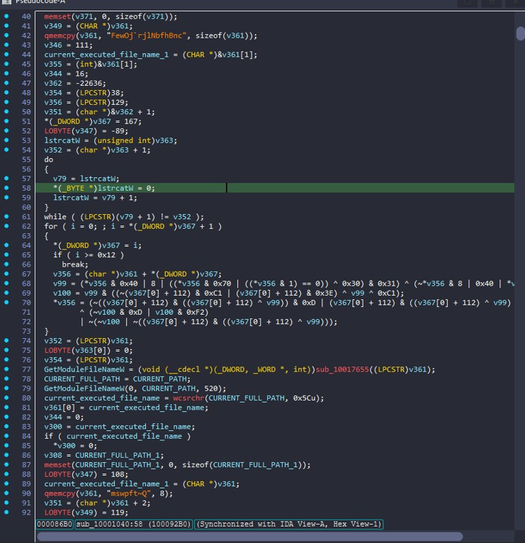Flow về cơ bản là cũng retrieve gần hết rồi. Vì bài này mình chỉ đi vào nghiên cứu deob CFF thôi nên sẽ bỏ qua các string obfuscate bằng MBA khác. Ví dụ như trên hình, mswpft~Q là encrypted string từ API sau:
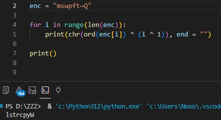Tuy nhiên cũng bởi obfus MBA quá bẩn, mình không rõ mình deob 100% không? Vậy nên tiếp theo mình sẽ tự xiên 1 mẫu của mình có API rõ ràng để theo dõi kết quả ok hơn :v.
Sample 2 — Custom Mèo
Mẫu thứ 2 là malware nội bộ mình tự dev. Với obfus command như sau:
clang-cl.exe /LD dllmain.cpp
-mllvm -fla
-mllvm -bcf
-mllvm -bcf_prob=100
-mllvm -bcf_loop=2
-mllvm -sub
Đến với cách tiếp cận mẫu thứ 2 này, vẫn bám theo format cũ thôi. Trước tiên vẫn là tìm dispatcher block bằng block nhiều pred nhất:
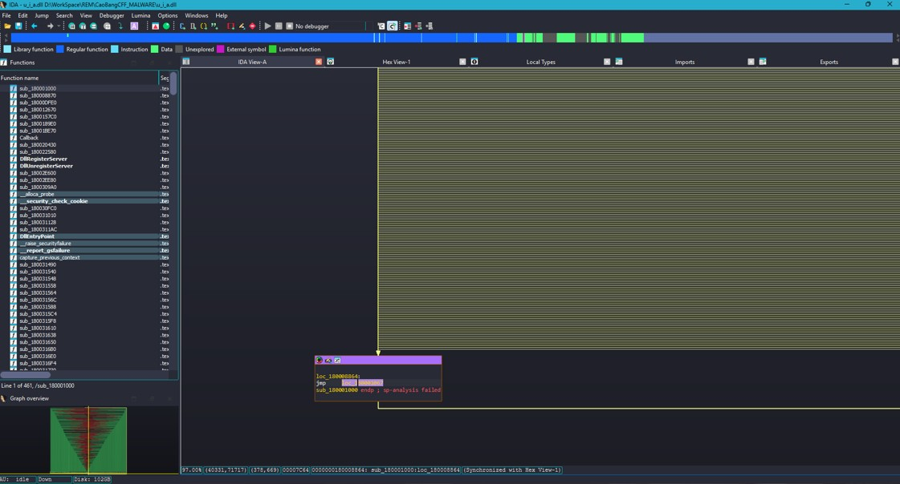 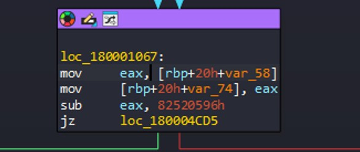Well, nhưng ta có thể thấy ở đây dispatcher không sử dụng register nữa, mà dùng memory để lưu các giá trị switch flow.
Thế nhưng sự khác biệt là không đáng bao nhiêu cả, bản chất của block trên vẫn là mov imm32 vào dispatcher, sau đó dùng zero flag để switch flow (sub, jz == cmp, jz). Patch tương tự như cũ, chỉ khác pattern đi 1 chút:
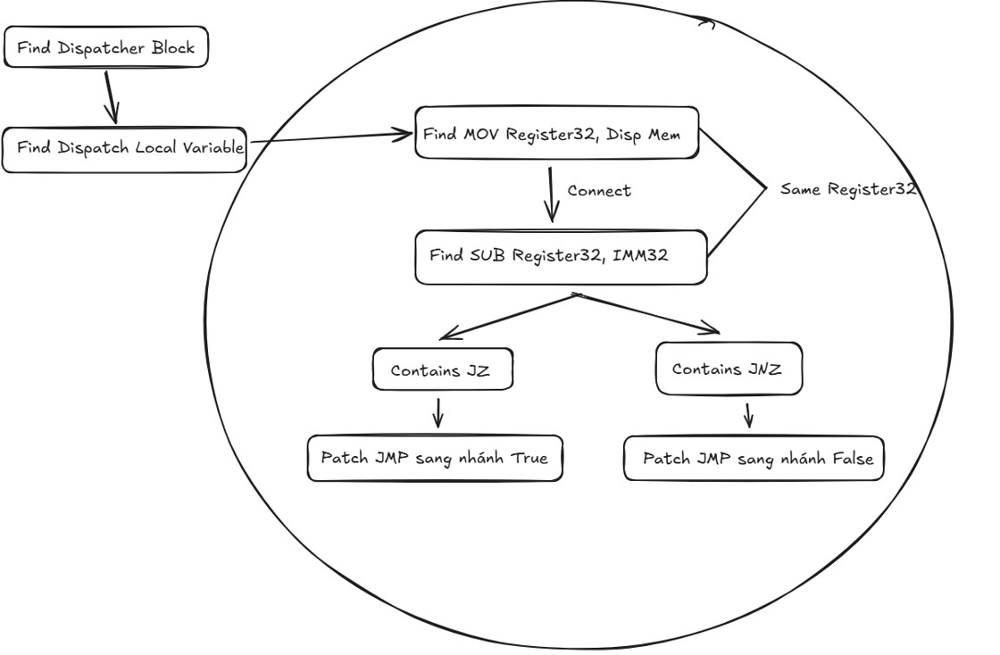Mẫu này tương tự sử dụng các obfus đơn giản bằng MOV Dispatch mem, Imm32 sau đó JMP hoặc không, mình sẽ không đi chi tiết vào nữa:


Mẫu cũng sử dụng CMOVNZ vào obfus. Tuy nhiên, cách tiếp cận của nó rất khác mẫu trước, có 2 variant CMOVNZ, mình sẽ đi vào từng cái 1.
1. Variant Patterns.
1.1. CMOVNZ with Global variable.
Pattern này gặp khá nhiều trong xuyên suốt luồng chương trình:
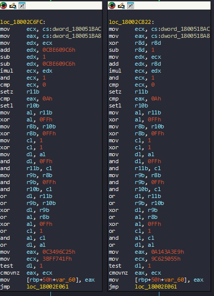Các global variable này đc init runtime:
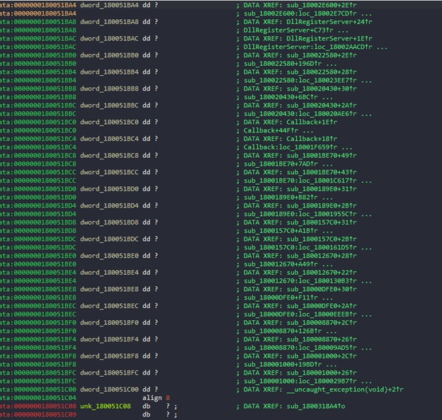Vậy nên làm sao để biết dl trả về bao nhiêu mà make flow?
Tại đây, mình dùng unicorn emulate lại bắt đầu mov reg32, global var đầu tiên tới lệnh test dl, 1:
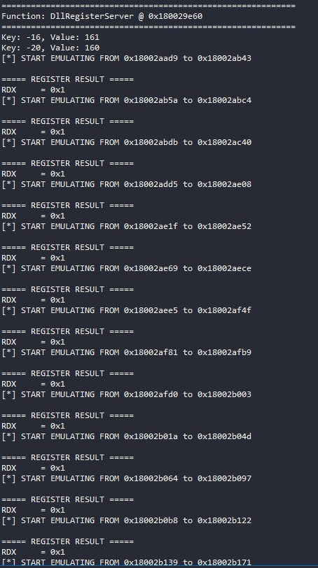
Có vẻ chỉ là obfus tính toán linh tinh, và bất kể 2 global variable kia bằng bao nhiêu, dl luôn luôn trả về True. Từ đây, ta có thể xử lý variant này bằng cách patch JMP thẳng đến IMM32 của ecx luôn :D, tương đối dễ.
1.2. CMOVNZ with out Global variable.
Những pattern này thì không có Global variable ở đầu:
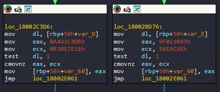Local var được mov vào dl này lại là giá trị được xử lý theo những đoạn code “có nghĩa”:
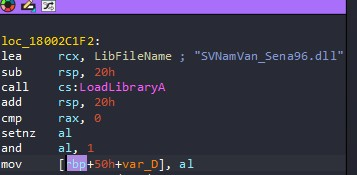Đâm ra khá là khó để emu mà biết được dl là bao nhiêu. Khi này mình nảy ra ý tưởng là sao không kệ luôn nhỉ, patch thành condition jump dựa theo 2 imm32 đích là được :D.
Well, và kết quả sau khi patch thì cực kì đẹp. From this:
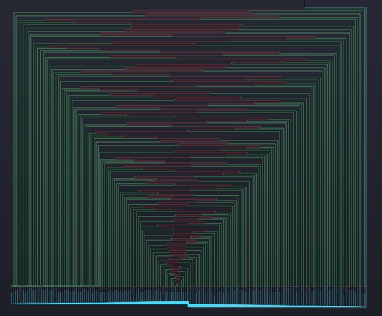To this:
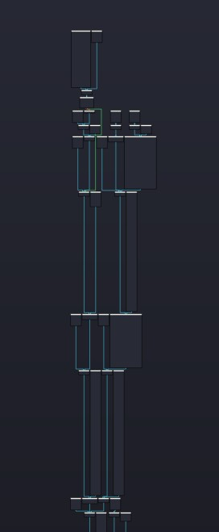Tất cả những hàm bị CFF trong mẫu này, mình đều có thể recover gần như nguyên bản hết:
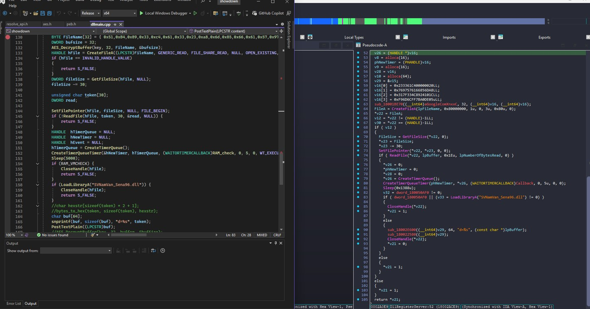 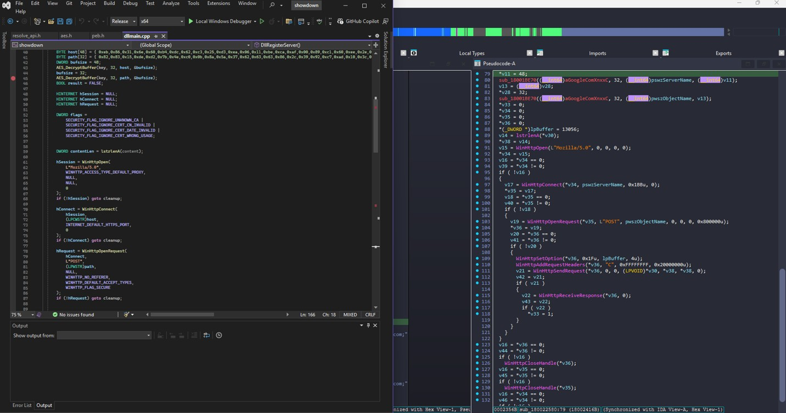 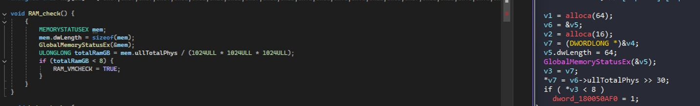Summary.
Như vậy là ta vừa đi qua 2 mẫu CFFed và hướng để deob. Tóm gọn lại, khi deob CFF, mình luôn chú trọng đến tìm được 3 thứ mấu chốt như sau:
- Tìm CFF Dispatcher(s).
- Tìm Destination đối với từng IMM.
- Tìm và xử lý các Variant pattern.
Từ những dữ kiện đó, ta hoàn toàn có thể nối chúng về flow gốc tương đối ok.
-> Đây là toàn bộ chia sẻ về kinh nghiệm trong suốt quá trình tìm hiểu, nghiên cứu deob CFF của mình. Có thể mình chưa gặp nhiều các variant và các kiểu CFF khó hơn khác, nên nếu có gì thiếu hoặc sai sót, mong được đóng góp qua tin nhắn :3. Cảm ơn đã đọc!
Script
PlugX deobfuscate scriptCustom mlaware deobfuscate script
Sample
PlugX sampleCustom sample